Learn more about climate action:
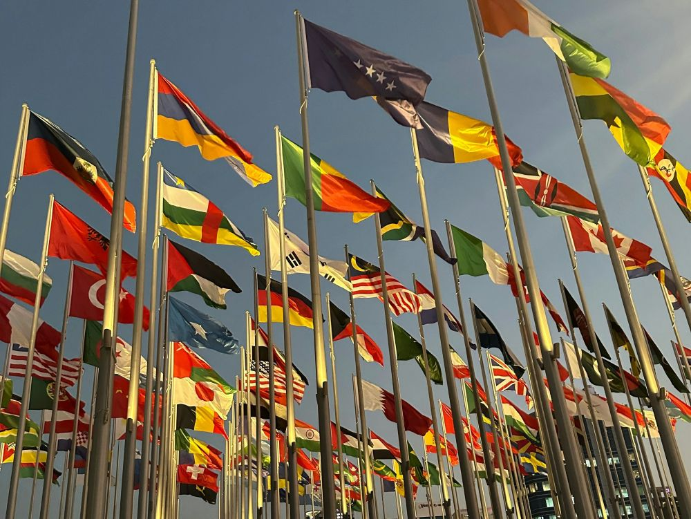
What is being done?
- United Nations Sustainable Development Goals
- Singapore Green Plan 2030
- United Nations Framework Convention on Climate Change
- Advancements in technology
- Individual & businesses efforts
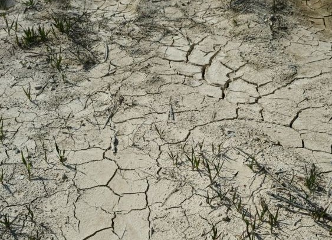
Why it matters?
Unsustainable practices has worsened climate change which greatly impacts all of us. From warmer temperatures to water scarcity, it is more important than ever that we take action to prevent further consequences.
Learn More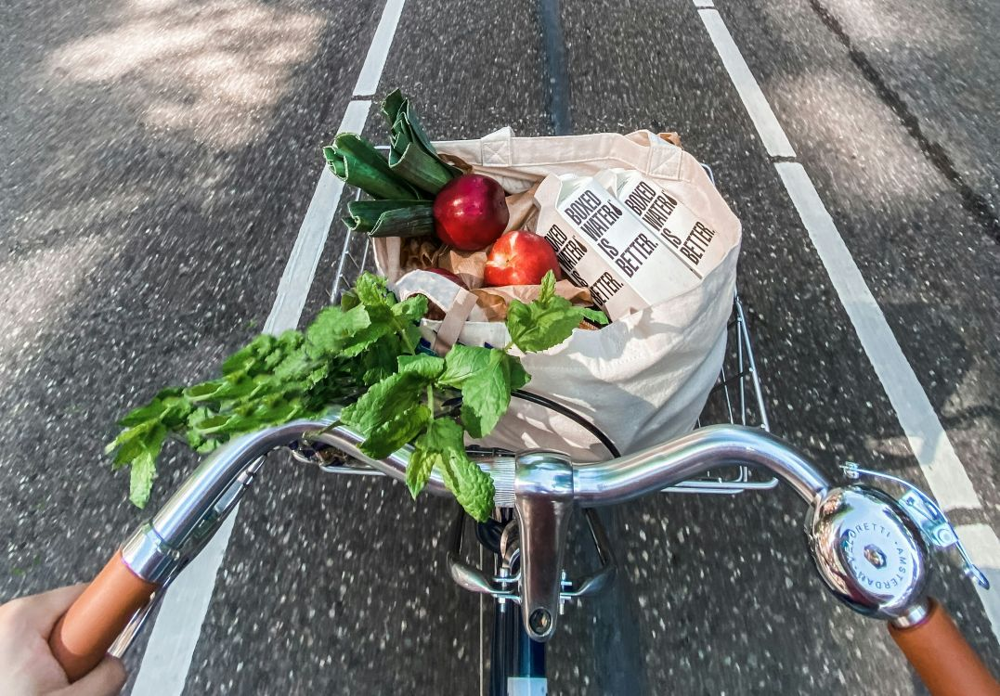
What can you do?
- Buy local produce
- Volunteer for environmental causes and advocate for sustainable practices
- Reduce, Recycle, Reuse
- Take public transport, walk, cycle or get an electric vehicle
What is being done?
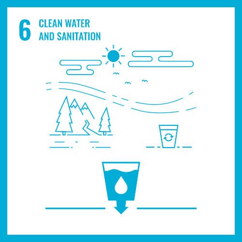
SDG 6: Clean water and sanitation1 in 3 people live without sanitation which results in unnecessary disease and death. Providing affordable equipment and education about hygiene is one of the ways we can prevent this.
Key targets:
- Safe and affordable drinking water
- Improve water quality, wastewater treatment and safe reuse
- End open defecation and provide access to sanitation and hygiene
- Increase water-use efficiency and ensure freshwater supplies
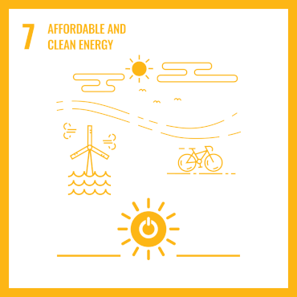
SDG 7: Affordable and Clean Energy
Dependence on fossil fuels is damaging the environment, making the swift adoption of cleaner energy sources essential. Especially since renewable sources are becoming more affordable and efficient.
Key targets:
- Universal access to modern energy
- Increase global percentage of renewable energy
- Double the improvement in energy efficiency
- Promote access to research, technology and investments in clean energy
- Expand and upgrade energy services for developing countries
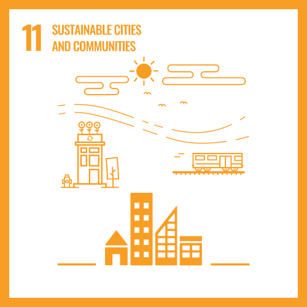
SDG 11: Sustainable cities & communities
As population increases, urban planning becomes crucial to create a safe, affordable, resilient and sustainable city for everyone to thrive in.
Key targets:
- Safe And Affordable Housing
- Affordable And Sustainable Transport Systems
- Inclusive And Sustainable Urbanization
- Reduce The Adverse Effects Of Natural Disasters
- Reduce The Environmental Impact Of Cities
- Provide Access To Safe And Inclusive Green And Public Spaces
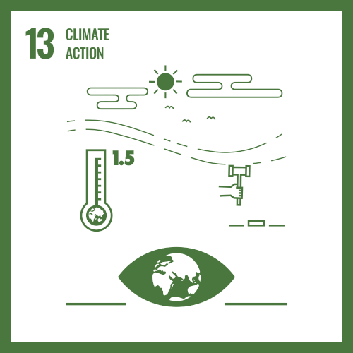
SDG 13: Climate Action
Climate change is a serious threat that demands urgent action through education, innovation, and commitment to climate goals. These efforts will create opportunities for new jobs, global prosperity, and a greener future.
Key targets:
- Strengthen resilience and adaptive capacity to climate-related disasters
- Integrate climate change measures into policies and planning
- Build knowledge and capacity to meet climate change
- Implement the UN Framework Convention on Climate Change
- Promote mechanisms to raise capacity for planning and management
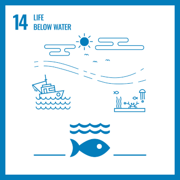
SDG 14: Life below water
Oceans cover 70% of our planet and are essential for food, water, and energy. However, overfishing and harmful practices have caused serious damage. To prevent further harm, we must reduce pollution, end overfishing, and protect marine ecosystems through sustainable management.
Key targets:
- Reduce marine pollution
- Protect and restore ecosystems
- Reduce ocean acidification
- Sustainable fishing
- Conserve coastal and marine areas
- End subsidies contributing to overfishing
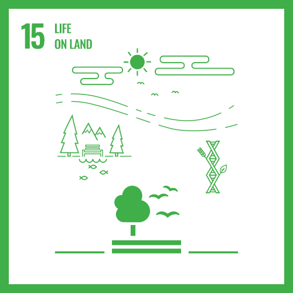
SDG 15: Life on landThe ecosystem has suffered tremendously due to deforestation, loss of natural habitats and land degradation. Protecting the fragile ecosystem, promoting sustainable use and preserving biodiversity is key to our future.
Key targets:
- Conserve and restore terrestrial and freshwater ecosystems
- End deforestation and restore degraded forests
- Protect biodiversity and natural habitats
- Eliminate poaching and trafficking of protected species
- Combat global poaching and trafficking
Key targets:
- Plant 1 million trees
- Quadruple Solar energy deployment by 2025
- Reduce the waste sent to landfill by 30% by 2030
- At least 20% of schools to be carbon neutral by 2030
- All newly registered cars to be cleaner-energy models from 2030
City in Nature
The objective is to create a green, liveable and sustainable home.
This is being done by expanding nature parks, adding more greenery to gardens and parks, integrating nature into urban areas, improving connections between green spaces and provide better healthcare and management for animals.
Energy Reset
Solar energy will continue to be deployed on rooftops, reservoirs and open spaces. To make up for unreliability during bad weather, energy storage systems are being implemented. It stores excess energy for future use.
By 2025, new diesel car and taxi registrations will cease being replaced by cleaner models. 60 000 electric vehicle (EV) charging points are to be built by 2030 to promote EV adoption.
Green Economy
This involves incentives that help companies be more sustainable by being energy and carbon efficient. One of these initiaves is the NEA's Energy Efficiency fund which provides up to 70% support when pre-approved energy efficient equipment is being used.
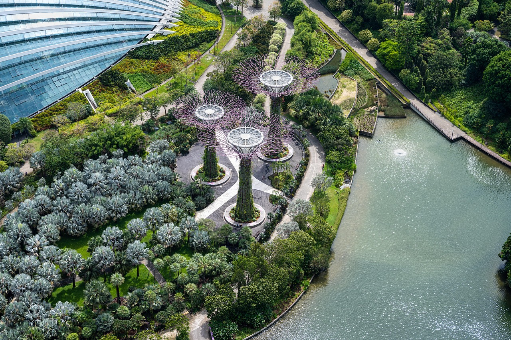
Resilient Future
Increasing coastal and flood defence to combat sea-level rise. Through the Coastal-Inland Flood Model which assesses flood risks. SG also aims to strengthen food security by producing 30% of nutrition needs by 2030. With a 60 million Agri-Food Cluster Transformation Fund that provides support to farms. As well as managing rising temperatures by increasing greenery and using cool paint on the exterior of buildings.
Sustainable Living
Eco Stewardship Programme is being implemented in MOE schools pre-university in an effort to nurture environmental stewardship.
To promote greener commutes, the MRT network and the cycling infrastructure will be expanded to 360km by early 2030s and ~1300km respectively.
What is the UNFCCC?
The UNFCCC is an international treaty to combat climate change and aims to stabilize greenhouse gas concentration, promote cooperation among countries, to facilitate negotiations, agreements and to support developing countries. The Conference of Parties (COP) is the supreme decision-making body and meets every year. Currently, they have 198 parties and 165 signatories. Some agreements passed include the Kyoto Protocol and the Paris Agreeement.
Paris Agreement
The Paris Agreement is a legally binding international treaty on climate change. It was adopted by 195 Parties at the UN Climate Change Conference (COP21) in Paris, France, on 12 December 2015. It entered into force on 4 November 2016.
Goal: To keep the global average temperature to well below 2°C above pre-industrial levels.
How it works:
Countries submit their climate action plan known as nationally determined contributions (NDCs). Each successive NDC is meant to reflect an increasingly higher degree of ambition compared to the previous.
Kyoto Protocol
The Kyoto Protocol is an international treaty that extentds the 1992 UNFCCC. It is aimed at industrialized countries and economies limiting and reducing greenhouse gas emissions according to agreed individual targets.
How it works:
A compliance system was established to ensure transpareny and hold Parties accountable. Countries actual emissions are monitored and precise records are kept.
Carbon Capture and Storage (CCS)
This is a way to reduce CO2 emissions which is a major contributor to climate change. According to the Global Monitoring Laboratory, it accounts for 80% of the Annual Greenhouse Gas Index (AGGI) which tracks the warming effect as a result of human-related greenhouse gas. There is also Carbon Capture, Utilisation and Storage (CCUS) which involves using the CO2 in industrial processes such as in concrete and plastic.
How it works: The first step is to capture CO2 produced from industrial processes, then it has to be seperated from other gases before being compressed to be transported deep underground by through injection into rock formations to be stored permanently.
- Reduces carbon emissions
- Creates jobs
- Energy security
- High costs
- Requires a lot of energy
- Potential Environmental risks
Biochar for soil restoration
How it works: Biochar which is a charcoal produced from plant matter which is then applied to the plant. Some ways to apply it include mixing it into topsoil by tilling or applying a surface layer and letting rain incorporate it.
It improves the soil by increasing soil water holding capacity and increases porosity. High porosity is beneficial as it ensures air reaches deeper into the soil which roots nned to breathe and grow.
- Increases crop yields
- Climate benefits like reducing fertilizer runoff
- Slow effects
- High cost
Space-Based Solar Power
How it works: Satellite-based solar panels in space that can capture and transmit a lot more energy than solar panels on Earth. With the help of giant mirrors, these satellites would reflect solar rays onto smaller solar collectors. The readiation will then be beamed to Earth safely as a microwave or laser beam.
- Low startup costs around the 500 million to 1 billion
- Provide upwards of 1GW of energy to terrestrial receiver
- Consistent power without interference from atmospheric conditions
- Safety concerns like weaponization
- Impossible to repair
- High costs to produce around 10 billion
Individuals
Wangari Maathai
The first African woman to achieve a Nobel Peace Prize for her contribution to sustainable development, democracy and peace. She was also the first to get a doctorate in biology in East and Central Africa. She founded the Green Belt Movement in 1977 that was aimed at stopping deforestation that was affecting farming communities ability to survive and support themselves through the land which later planted over 30 million trees.
Greta Thunberg
She is a Swedish environmental activist known for climate action and sustainable living. She has raised public awareness about climate change and started the Fridays for Future. It is an international climate movement which involves school students skipping Fridays to participate in demonstrations that demand action from leaders in regards to climate change.
Businesses
Patagonia
Patagonia provides outdoor clothing and gear and ensures that their products are made under safe, fair and humane working conditions while being environmentally conscious. They have environmental and animal welfare programs that influence how their materials and products are made. An example of this is the use of recycled materials and organic certified cotton.
Schneider Electric
They were ranked the most sustainable company of 2024 in the TIME's world article with a score of 88.86. For Schneider Electric, sustainability is at the center of their mission they are committed to achieving net-zero emissions by 2050. They help organisations to reduce their energy consumption, improve efficiency and transition to green energy sources.
Why it matters?
Impacts of Climate Change
Rising Sea Levels
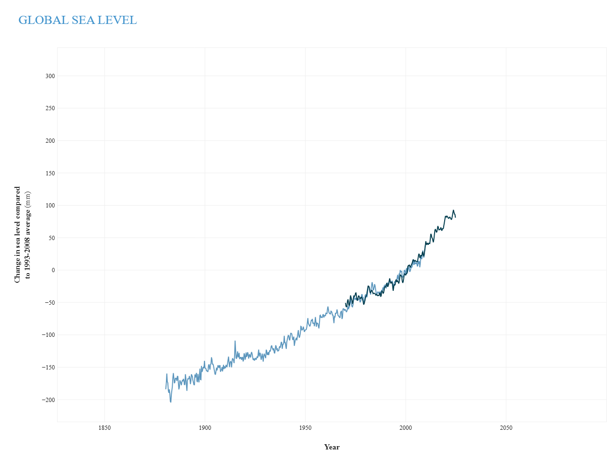
As seen from the graph, sea level has been steadily increasing over the years. This is especially a concern for island nations like Singapore that are surrounded by water. With 30% of Singapore lying less than 5m above sea level, sea level rise is a real threat. Furthermore, it also exacerbates coastal flooding which causes property damage and economic loss.
Currently, the projected sea level rise is around 0.3m by 2050 and up to 1.0m by 2100 depending on greenhouse gas emissions. This is a major problem for low lying countries like Maldives which lie just 1.5m above sea level.
Food and Water security
SG context:
Warmer climate leads to more droughts hence, imported water and water from reservoirs will become less reliable.
NEWater will also be at risk as the lack of fresh water means there is no water to recycle.
Desalination also may be ineffective as climate change affects water quality. As desalination plants are built for a certain range of water quality, an increase in plankton will result in less water being filtered, hence it is less efficient to get clean water.
As clean water is essential to sustain life, climate change threatening our water supply is very concerning.
Droughts occur more frequently due to climate change, affecting the amount of crops that farmers can produce as droughts reduce water supply available. This can lead to lower crop yield which affects the food supply. This can lead to a shortage of food which drives up food prices.
Public Health
Climate change has contributed to a rise in extreme weather events, which in turn have led to deteriorating air and water quality. Warmer temperatures have increased the prevalence of vector-borne diseases such as Dengue, and as global temperatures continue to rise, more regions, previously too cool to support these disease-carrying species, may become vulnerable. Additionally, the hotter climate has resulted in more heat-related illnesses like heat stress, creating discomfort and posing serious health risks for people living in affected areas.
Ecosystems
The rising global temperatures climate change causes disrupts ecosystems all over the globe. The various changes from changes in rainfall patterns to extreme weather events are all happening faster than most species can adapt.
One of the most vulnerable ecosystems is the Artic where melting glaciers are causing rising sea levels.
Impacts of Pollution
Air pollution: Leads to acid rain, respiratory issues, and global warming.
Water pollution: Harms aquatic life, contaminates drinking water.
Soil pollution: Affects plant health, reduces agricultural productivity.
Oceans
Coral bleaching:
It is caused by rising temperatures. This causes coral bleaching as the algae that lives in corals leave coral reefs, turning them corals white. This puts marinelife reliant on coral reefs in danger as they lose their homes. It also causes loss of diversity in herbivorous fish that affect coral reef ecosystems. This is because many marinelife rely on coral reefs for shelter and protection form predators. In just over the last 20 years, coral reefs has declined by 44% in Florida Keys and by up to 80% in the Caribbean.
Ocean acidification:
This occurs as more CO2 is getting dissolved into oceans due to the high CO2 emmissions. Ocean acidification involves a decrease in the pH of the ocean which occurs as the CO2 that dissolves in the ocean water reacts to form carbonic acid which lowers the pH of oceans.
Ocean acidification affects calcifying organisms like coral and plankton that use it to form shells and skeletons because it makes their shells vulnerable to dissolution.
Decline in fish populations and harm to sea bed:
Decline in fish populations: This occurs due to overfishing. Overfishing involves unsustainable fishing that exceeds the rate at which fish can reproduce and replenish their populations naturally.
Harm to sea bed: This happens because of harmful and destructive fishing practices. Some of these practices include bottom trawling and blast fishing.
Bottom trawling involves dragging a fishing net(trawl) across the sea floor. This causes damage to the sea bed as habitats like coral reefs and seamounts. This also causes a lot of bycatch that is discarded.
Blast fishing involves using explosives to kill schools of fish and is extremely destructive to the ecosystem. Not only is this method inefficient with only fish that float to the surface being collected, it is also one of the biggest threats to coral reef ecosystems.
Water pollution:
The main sources of water pollution of waterways are sewage discharges, industrial activities, agricultural and urban runoff. Some of which inevitably ends up in the oceans. The Great Pacific Garbage Patch is an example of the severe impacts of pollution consisting of mainly plastic debris. Water pollution leads to marinelife being injured or even dying. Oil spills for instance, suffocate marinelife by permeating their gills.
Biodiversity
Climate change could result in species migration. As temperatures rise, certain climates become to warm for a species to live in, they may choose to migrate to a cooler and more suitable environment. This leads them to abandon their current habitats, which can disrupt food chains and ecosystems that rely on them. Since not all species can migrate or adapt fast enough, it could lead to them going extinct and reuding biodiversity.